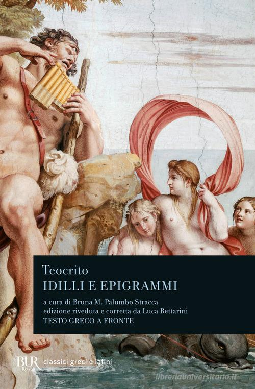
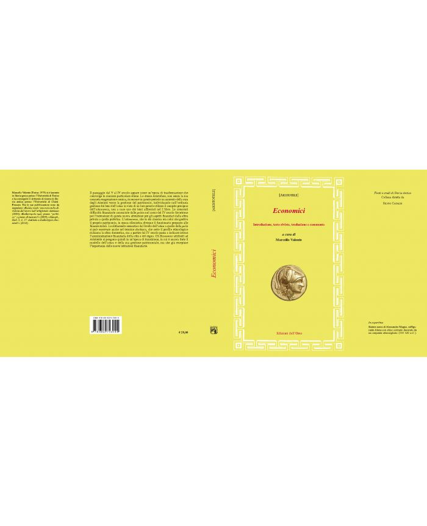

25:36 · 6 OPERE
Gli inganni e le astuzie di Dionìsio il Vecchio.
Il filo del discorso
Dr Divago legge tre aneddoti su Dionisio di Siracusa per ragionare sui modi in cui il potere può ottenere consenso e risorse attraverso il linguaggio. La premessa assegna alla cultura, al dialogo socratico e alla tradizione classica il compito di difendere l’individualità. I richiami biblici agli idoli introducono il tema della sostituzione: una forma visibile può prendere il posto della comprensione che dovrebbe sostenere. Un detto riportato nei Moralia di Plutarco, sull’inganno rivolto ai bambini e agli adulti, apre una digressione su giuramento, onore e responsabilità. Seguono i racconti attribuiti nel video ad Aristotele, riconducibili agli Economici pseudo-aristotelici. Nel primo Dionisio chiede gioielli come offerta a Demetra, poi li trasferisce nel proprio tesoro e impone nuove contribuzioni. Nel secondo restituisce inizialmente una somma per conquistare la fiducia dei cittadini, prima di trattenere una successiva raccolta destinata alla flotta. Nel terzo promuove una moneta di stagno da accettare come argento. Il relatore propone questi episodi come chiavi di lettura delle forme contemporanee di manipolazione. La scheda distingue la testimonianza letteraria antica, l’attribuzione dei testi e l’analogia politica: gli aneddoti non dimostrano da soli che eventi diversi abbiano le stesse cause o che ogni istituzione attuale ripeta la tirannide siracusana.
I libri nel discorso

Bibbia
Copertina: San Paolo, 2014 · Nuova Versione dai Testi Antichi · edizione di riferimento
Isaia e l’invito ad alzare gli occhi sono nominati; segue il richiamo agli idoli con occhi e orecchi.
Passaggio 3:53 ↗ · Fonti e libro ↗
Apologia di Socrate
Identificazione probabile
Copertina del volume Apologia di Socrate. Critone: BUR · Apologia di Socrate. Critone · a cura di Maria Michela Sassi, 1993
Copertina autentica del volume BUR contenente Apologia di Socrate e Critone. Il secondo titolo non è aggiunto come citazione del video; l’autore del testo è Platone, con Socrate come figura protagonista.
Socrate e il dialogo come sommo bene suggeriscono Apologia 38a; nessun titolo annunciato.
Passaggio 4:39 ↗ · Fonti e libro ↗
Moralia
Copertina: Bompiani · Tutti i Moralia, 2017 · coordinamento Emanuele Lelli e Giuliano Pisani
Immagine autentica dell’opera, controllata visivamente; l’edizione di riferimento non è attribuita al filmato.
Plutarco e Moralia sono nominati come fonte del detto attribuito a Dionisio.
Passaggio 9:26 ↗ · Fonti e libro ↗
Risposta alla domanda: che cos’è l’Illuminismo?
Identificazione probabile
Copertina della raccolta che comprende il saggio sull’Illuminismo: Firenze University Press · Sette scritti politici liberi · 2011 · a cura di Maria Chiara Pievatolo
Copertina del volume cartaceo FUP che comprende il saggio, riscontrato dal catalogo universitario. L’ISBN appartiene alla raccolta; il filmato non annuncia un’edizione e il titolo del saggio è un’identificazione probabile della citazione.
L’uscita dallo stato di minorità, attribuita a Kant, suggerisce Risposta alla domanda: che cos’è l’Illuminismo?, senza titolo annunciato.
Passaggio 10:22 ↗ · Fonti e libro ↗
Idilli
Copertina del volume Idilli e epigrammi: BUR · Idilli e epigrammi · Bruna M. Palumbo Stracca, revisione Luca Bettarini
Copertina autentica BUR del volume contenitore, con testo greco a fronte. La scheda libraria riporta 1993 per l’ISBN; la fotografia attuale reca anche la revisione di Luca Bettarini, senza attribuire alla prima tiratura l’aspetto di una ristampa non datata.
Teocrito e gli Idilli sono nominati; non è precisato un singolo componimento.
Passaggio 13:40 ↗ · Fonti e libro ↗
Economici (Oeconomica)
Identificazione probabile
Immagine editoriale della copertina aperta: Edizioni dell’Orso · 2011 · a cura di Marcello Valente
Immagine autentica ingrandita fornita dall’editore: comprende fronte, dorso, retro e risvolti. Non è un frontespizio né una ricostruzione. La miniatura iniziale di 265 pixel non è stata selezionata; è conservata privatamente. L’edizione 2011 non è attribuita al video.
I tre racconti attribuiti ad Aristotele corrispondono agli Economici II,2,20; il titolo non è annunciato e l’identificazione resta probabile.
Passaggio 14:10 ↗ · Fonti e libro ↗